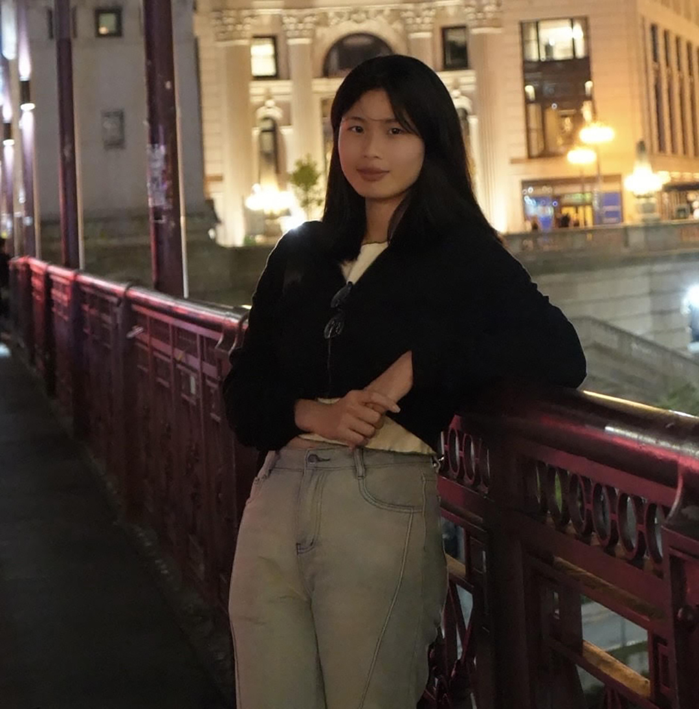

GRAPHIC DESIGN

Joy
Hi, I'm Joy. I'm a Junior Graphic Design student with a minor in UX design at Columbia College Chicago. I have been enjoying the classes and activities in Columbia, the professors are nice and professional, and I also met a lot of friends from different places. I enjoy the city vibe in Chicago, I always get a Dunkin before going to class. I love the school resources in Columbia. Studying in the computer lab, printing my work in the printing center, and hanging out with friends in the student center are the things I always do outside of class.